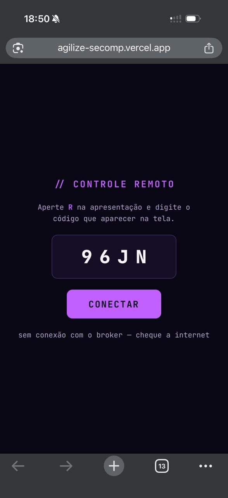

$ ./agilize --talk tech-team --2026
Frankfurt no meu
_
Como um controle remoto vibecodado atravessa o Atlântico — e o que isso ensina sobre redes, protocolos e segurança.
// demo ao vivo
Aperte R
Escaneie o QR e este deck passa a ser controlado pelo celular.
Slides, laser, holofote, zoom — e um trackpad.
Sem app. Sem Bluetooth. Sem cabo. Só uma URL — e um broker a 8 mil km daqui.
O que você acabou de ver
Slides
← → Início Fim Help. O celular vira um teclado de quatro teclas.
Ponteiro
Laser com rastro, holofote e lente de zoom — os mesmos do teclado (L, S, Z).
Trackpad
O dedo no vidro vira o cursor na tela. A 60 quadros por segundo.
~260 linhas no celular, ~130 no notebook. Escrito com IA em uma tarde.
Por onde passa um
"próximo slide"?
Do dedo no vidro até o pixel no projetor.
Spoiler: por três países e dois cabos submarinos.
A Viagem
Do seu dedo até Frankfurt
// modo nuvem — o caminho de cada toque no trackpad
Cada toque no trackpad faz esse trajeto.
Ou Virgínia, Dublin, Oregon — quem decide é o DNS do broker. Nenhum nó na América do Sul.
Cabos BRUSA (Fortaleza → Virginia Beach) e MAREA (Virginia Beach → Bilbao), ambos da Telxius — o traceroute passou pela Telxius. Trajeto provável; o exato é decidido salto a salto pelo BGP.
O caminho real, medido
Uma sonda por salto, Wi-Fi doméstico — os milissegundos oscilam; a ordem dos saltos é o que importa. Cada IP público tem dono registrado (LACNIC, ARIN, RIPE): não existe "rede anônima" no caminho.
Você não paga pelo broker lento.
Paga pela geografia.
A luz na fibra
Cerca de ⅔ da velocidade da luz no vácuo. É o teto físico de qualquer rede.
Salvador → Frankfurt
Em linha reta. Pelo caminho medido (EUA → Atlântico Norte), perto de 16.000 km.
Mínimo físico ida e volta
Pelo caminho real. Medimos 200–230 ms: o resto é fila, roteador, TLS e o broker.
Virgínia: 7.000 km, ~80 ms de física, 123 ms medidos. Um broker em São Paulo faria o mesmo trajeto em 30–60 ms.
9 destinos, 4 países — o inventário de saída
| destino | o que é | onde responde | distância |
|---|---|---|---|
| agilize-secomp.vercel.app | o site (HTML/JS) | Vercel edge gru1 · São Paulo | perto ✓ |
| unpkg.com | mqtt.js, lucide (código de terceiros) | Cloudflare · PoP GRU · São Paulo | perto ✓ (mas é JS alheio em runtime) |
| fonts.googleapis.com | fonte JetBrains Mono | Google · borda na América do Sul | perto ✓ |
| stun.l.google.com | STUN ("qual é meu IP público?") | Google · anycast | perto ✓ (revela seu IP, por design) |
| broker.emqx.io | MQTT sobre WSS | AWS · Virgínia, Oregon, Dublin | longe ✗ |
| broker.hivemq.com | MQTT sobre WSS (fallback) | AWS · Frankfurt | longe ✗ |
O que fica perto é o site. O que fica longe é exatamente o que precisava ser rápido.
Os Protocolos
MQTT, WebSocket e WebRTC
camada 1
MQTT sobre WebSocket seguro
Três tópicos, JSON de uma linha
retained = o broker guarda a última mensagem do tópico. Quem chega atrasado recebe o estado na hora, sem esperar o próximo tick.
O trackpad engasgava
Cada movimento do dedo ia até a Europa e voltava, 30 vezes por segundo.
O cursor não "seguia" — teleportava.
Solução: parar de passar pelo broker.
camada 2
WebRTC DataChannel
Direto
Celular ↔ notebook, sem servidor no meio. O broker sai da rota dos dados.
Sem ordem, sem retransmissão
"UDP com crachá": chega o que chegar, na ordem que chegar. Como voz e jogo.
Perder é melhor que esperar
Um sample atrasado do dedo é lixo: o próximo já está a caminho. Retransmitir só criaria fila.
Como dois aparelhos atrás de NAT se encontram
O broker apresenta os dois — e sai de cena
// modo p2p — o trackpad não sai da sala
state a cada 800 ms e a sinalização inicial. Cai o P2P, ele volta a carregar tudo.
Na mesma rede, o ICE escolhe os candidatos host (IPs da LAN) e o pacote nem chega ao roteador de borda. É por isso que "sem lag" = P2P; a suavização só disfarça o resto.
Suavizar é independente do transporte
Taxa de envio do celular: 16 ms por P2P, 33 ms pela nuvem.
Fator do lerp. Mais alto = mais nervoso; mais baixo = mais "manteiga", mais atraso.
Critério de parada. Sem loop rodando à toa quando o dedo para.
Pela nuvem o cursor atrasa, mas não engasga. Com P2P, nem atrasa.
O remoto finge ser teclado e mouse
mousemove.Quando a rede diz não
Wi-Fi público da UFBA, 18h50

A página carregou.
O broker, não.
A internet estava ótima — a página veio pela 443. A rede do campus só deixa sair 80 e 443. Os brokers estão em 8084 e 8884.
O erro mentiu — três vezes
.catch(function () {}) em toda a sinalização WebRTC. Falhas viraram silêncio.Neste deck: o remoto testa a 443 antes de culpar a internet e diz "esta rede bloqueia as portas do broker — use o hotspot". Timeout de 12 s, porque o HiveMQ levou 8 s pra aceitar conexão em 3 de 8 tentativas.
Quando o P2P não fecha
NAT simétrico
CGNAT de operadora no 4G/5G: a porta muda por destino. O que o STUN viu não é o que o par precisa acertar.
UDP bloqueado
Firewall corporativo ou Wi-Fi de evento. O hole punching nunca acontece.
Client isolation
Até na mesma rede: o Wi-Fi impede aparelhos de se verem. Candidatos host morrem.
Resultado: cai pra nuvem em silêncio. Funciona — com 200 ms.
A resposta técnica é TURN (o relay do WebRTC). A resposta de palco é o hotspot do celular: mesma LAN, candidato host, 5 ms.
Segurança
O que o TLS protege — e o que não
Quem vê o quê no caminho
| quem | conteúdo | metadados | pode… |
|---|---|---|---|
| Wi-Fi da UFBA | não (TLS) ✓ | domínio (SNI), DNS, horário, volume | bloquear · observar |
| Operadora / trânsito | não ✓ | IPs de origem e destino | bloquear · atrasar |
| Cabo submarino | não ✓ | fluxo agregado | nada útil |
| Broker EMQX / HiveMQ | tudo — é o endpoint ✗ | tudo | ler · alterar · injetar · cair |
| Quem leu o fonte | assina o tópico e vê tudo ✗ | tudo | controlar sua apresentação |
TLS protege o caminho. Não protege o destino — nem quem tem a chave da porta.
E se fosse ws:// em vez de wss://?
Sem TLS, o código da sessão viaja em texto puro; ver, alterar e injetar é uma linha de terminal. (Simulado — este app usa wss://; o browser nem deixaria: mixed content.)
Os furos reais deste app
| achado | onde | pior caso |
|---|---|---|
| Broker público, sem auth | EMQX / HiveMQ | qualquer pessoa no mundo assina o tópico |
| Wildcard revela todas as sessões | agz-secomp-remote/+/state | o state é retained: quem assina com + recebe o código de toda apresentação ativa |
lucide@latest, sem versão fixa | index.html:10 | uma release nova ou maliciosa roda no dia da palestra |
Nenhum integrity= (SRI) | 3 scripts do unpkg | CDN comprometido = JS arbitrário no notebook e no celular |
.catch(function(){}) | sinalização WebRTC | falha silenciosa → diagnóstico errado no palco |
Pior caso real: alguém pula meu slide. Aceitável — só porque o payload é "próximo slide".
Mesmo código, outro payload
este app
Trafega "próximo slide" e a posição de um dedo.
Pior caso: vergonha no palco.
um chat de atendimento com o mesmo padrão
Dados financeiros de clientes num broker público na Virgínia, sem auth, com wildcard.
Pior caso: vazamento + LGPD + transferência internacional sem ninguém ter decidido.
A diferença entre demo e incidente é só o que trafega. O código seria idêntico.
Vibecoding
O comportamento vem de graça. O conhecimento, não.
O modelo otimiza pra "funcionou na demo"
o que ele faz por padrão
- Serviço público grátis em vez de infra sua — sem SLA, sem auth, sem região
- Dados fluem pra onde é mais fácil, não pra onde deveriam
@latest, sem SRI, segredo no clientecatchvazio e mensagem de erro que chuta- Dependência que você não "possui": sem conta, sem contrato, sem aviso de incidente
o que você precisa pedir
- "Liste todo serviço externo, em que país, com que auth, e o que trafega"
- Classifique o dado antes de escolher o transporte
- Versão fixa +
integrity, ou copie o arquivo pro repo - Falha visível, com a causa certa
- Região e dono explícitos pra tudo que segura estado
Nada disso é defeito do modelo. É o que qualquer um faz quando o critério de sucesso é "rodou".
Como se proteger
grep -ohE "(https?|wss?|stun|turn):[^\"' )]+" no código; lsof -i ou Little Snitch pra ver as conexões reais.<script src>, ou vendorize. Dois minutos que fecham o vetor mais realista.O que eu mudaria neste app
| mudança | efeito | status |
|---|---|---|
| Zero JS de CDN em runtime | mqtt.js e o gerador de QR vendorizados, versão fixa, hash conferido | ✓ neste deck |
| Erro honesto + timeout 12 s | "esta rede bloqueia as portas do broker" em vez de "cheque a internet" | ✓ neste deck |
| QR com o código embutido | escaneou, conectou — sem digitar | ✓ neste deck |
| Broker próprio em São Paulo, porta 443 | passa em Wi-Fi de campus; 30–60 ms em vez de 200; auth e ACL por tópico | próximo passo |
| Código maior + tópico não enumerável | fim do sequestro por wildcard | junto com o broker |
| TURN com credencial temporária | P2P em qualquer rede, via function no Vercel | se precisar |
O broker é o único item que exige infra — e é o que resolve porta, latência e auth de uma vez.
Pergunte por onde passa.
Toda vez. Antes de subir no palco — ou pra produção.
// EOF — perguntas? Aperte R e me controle.